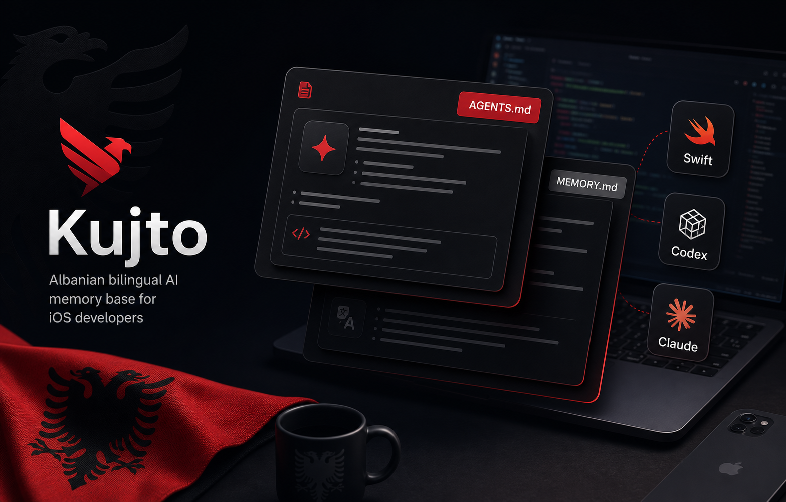

Without Kujto
Every new session starts from zero. You re-paste architecture rules, coding style, simulator commands, and PR conventions. Context resets, patterns get dropped, and you repeat the same setup prompts over and over.
Open-source AI memory
Your AI agents forget your codebase rules every session. Kujto keeps them versioned in git, so Claude, Codex, Gemini, Copilot, and Cursor share one source of truth.
"Kujto" do te thote "mbaj mend" ne shqip. Memorie e versionuar ne git per cdo agjent AI qe prek kodin tend.

The problem
Every new session starts from zero. You re-paste architecture rules, coding style, simulator commands, and PR conventions. Context resets, patterns get dropped, and you repeat the same setup prompts over and over.
Each agent reads versioned Markdown memory from your repo. Architecture guides, workflow rules, and project conventions survive every session. One AGENTS.md layer that all your tools read instantly.
How it works
Run wire.sh to link AGENTS.md, CLAUDE.md, CODEX.md,
and GEMINI.md into any project. One command, all agents configured.
Every agent starts at memory/MEMORY.md, then opens
only the files relevant to the current task. No bloat, no noise.
Your project rules evolve through reviewable Markdown diffs, not copy-pasted prompts that disappear into chat history.
Get started
Clone the memory base, fork it, and make it yours. Albanian stays first, English stays in sync. MIT licensed.
curl -fsSL https://raw.githubusercontent.com/peterdsp/kujto/main/bin/install.sh | bashWho it's for
12 ready guides for Swift, SwiftUI, UIKit, TCA, and modular architecture. Plus simulator.sh: build, install, and stream logs from any Xcode project with zero config.
One unified AGENTS.md layer that Claude, Codex, Gemini, Copilot, and Cursor all read instantly. Stop maintaining separate configs for each tool.
We shouldn't just consume tools, we can build and open-source them globally. Documented cleanly, named in our own language, Albanian identity at the front.
Pse shqip?
"Kujto" nuk eshte vetem nje emer. Eshte nje fjale qe cdo shqiptar e kupton menjehere.
Kur agjenti AI lexon AGENTS.md, ai lexon nje skedar te emertuar ne shqip,
te ndertuar nga nje zhvillues shqiptar, per nje komunitet qe meriton te ndertoje, jo vetem te konsumoje.
Ne boten e teknologjise, shqipja rralle shihet ne kod. Kujto e ndryshon kete. Cdo skedar memorje ka seksionin shqip te parin. Cdo udhezim shkon shqip para anglishtes. Kjo nuk eshte lokalizim, eshte identitet.
Nese je zhvillues, student, ose thjesht kurioz, je i mirepritur ketu. Forko, kontribuo, ose thjesht vendos nje yll. Kjo eshte e jona.
What's next
Kotlin, Compose, and Gradle architecture guides.
Vapor, Express, and server-side workflow memory.
Install with brew install kujto on macOS.
Dedicated extensions for Xcode and VS Code.